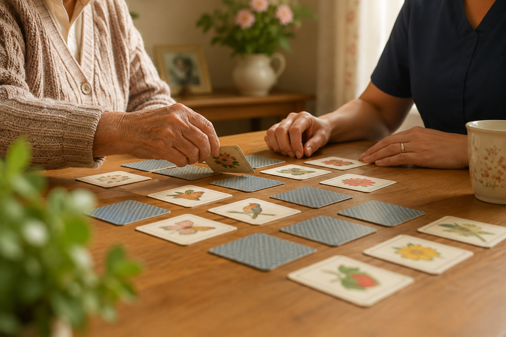

15 Games for People with Dementia
Gentle games that spark connection, not pressure — from over 10 years as a live-in dementia carer.

The word "game" can feel intimidating when someone has dementia — nobody wants to feel tested or wrong. The games that actually work aren't about winning. They're about doing something together, at whatever pace feels comfortable. Here are 15 I've used and seen work well, grouped by type.
Memory and recall games
- Guess the object by touch. Place a few familiar household items in a bag and take turns guessing what's inside.
- Finish the phrase. Start a well-known saying or nursery rhyme and let them complete it — long-term memory often holds strong here.
- Name that tune. Hum the first few notes of a familiar song and see if they can name it.
- Categories. Take turns naming things in a category — flowers, animals, seaside towns. No pressure to get it "right."
Matching and sorting games
- Simple card matching (pairs). Use large, clear picture cards rather than small or busy designs.
- Sort objects by colour. Buttons, wool, or garden items work well.
- Match the sound to the animal or object. A gentle listening game that works even when words are harder.
- Jigsaw puzzles with large, simple pieces. 12–24 pieces tends to be the sweet spot — enough of a task without frustration.
Conversation-based games
- Would you rather. Simple, light choices — tea or coffee, beach or mountains — that spark chat without needing a "correct" answer.
- Two truths and a story. Share a memory and let them respond with one of their own — no scoring, just swapping stories.
- Picture description. Look at an old photo or postcard together and describe what you both notice.
If you'd like these kinds of games ready-made, ordered, and easy to pick up in the moment, I built Together — seven gentle memory games designed for exactly this, side by side, no pressure, no timers.
Sensory and calming games
- Texture guessing. Feel different fabrics — velvet, wool, silk — and describe how each one feels.
- Smell and guess. Coffee, cinnamon, lavender — a gentle way to spark memory and conversation.
- Simple ball toss or bean bag game, seated. Good for gentle movement and a bit of light-hearted fun.
None of these need a scoreboard. The best sign a game's "working" isn't a right answer — it's a smile, a memory surfacing, or a few extra minutes of easy connection.
Together and WithYou were both built from moments exactly like these — Together for connection through games and conversation, WithYou as a practical toolkit for carers.
Explore Together and WithYou